Last month, we’ve talked about the workflow on my dev machine side, this month we are going to look at the backend side of this workflow.
For the automatic title creation workflow, I have setup a local LLM workflow using Ollama and lang-chain
0 - Install the VM
1 - Install Ollama
2 - Download models from Ollama repo
3 - install LangChain
4 - Build the python script to orchestrate the workflow
5 - Configure ssh with key to automate the work
I recommend to run this on a VM, at least for those 4 reasons,
1 - Separate the tasks
2 - Avoid cluttering your own machine
3 - AI workload is quite CPU and/or GPU intensive
4 - Reduce security risks
Installing a VM is out of the scope of this article, also you can do it in any preferred way you wish and use the vendor you are the most comfortable with, VirtualBox, Vmware Workstation, XCP-ng, Proxmox and so on.
On my side I have an XCP-ng host, on which I’m deploying my Virtual machines.
At the end of the day you need a machine running Linux as this is what I’m using to show the steps in this article.
This is not the focus for today, so I will not go to the VM deployment details, in future articles I will propose dedicated articles for XCP-ng set up and VM deployments.
Once your Linux host is ready,you need to get the install command from the ollama.com website.
At the time of writing, this goes through an install script that can be trigger after downloading it.
I strongly recommend to read any script you download from the net, prior running them. This is a basic sanity check to avoid surprise or compromising your machine.
Once Ollama is install you can first check that everything is fine by checking the version.
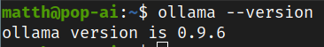
As you can see, I’m using Ollama version 0.9.6
PS: to upgrade Ollama, you can use the same command from the Ollama website.
You can now download any model you want from Ollama Library
For instance you would like the Gemma3n, you can download it with this command
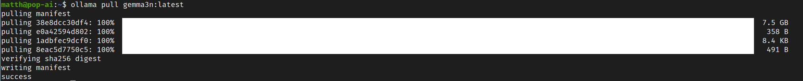
LangChain is a framework designed to assist developers in building applications that utilize large language models.
On PopOS ( Debian/Ubuntu downstream distribution), you will need to install python and pip python virtual environment, then you can install LangChain through pip.
This may divergent depending on your distribution.
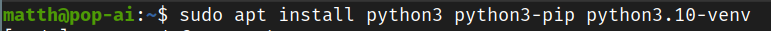
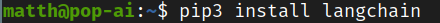
Then I’m creating a python environment for LangChain
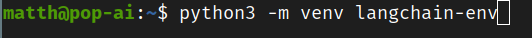
I can finally source it prior running my python script that uses LangChain framework
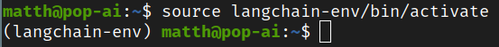
You will find the script in my GitHub repo, the link is available at the end of this article.
This script when being trigger is looking for odt files in a watch folder, it will monitor the folder for new files until the script is terminated.
Once all odt files has been detected, it will process them one by one.
Disclosure: I don’t really know what I’m doing here, this is my interpretation of the LangChain workflow.
I may and probably are wrong in some concept or interpretation.
The way it’s done here, is that the file is split-ed in chunk then imported in a vector database (later I will use the term “db”) using an embedding model in my case I’m using “nomic-embed-text”.
I import each file in a different collection in the vector db to make sure the context is of the current file being imported.
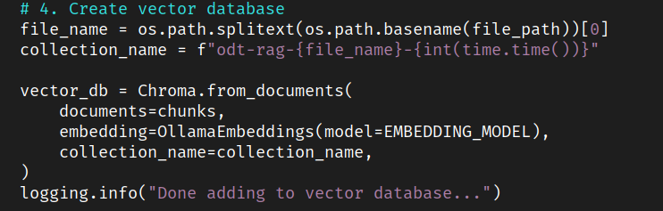
I encounter this issue where in my original testing all my files where imported in the same collection consequently the context was completely polluted and the output of the LLM was base on all my articles, ending up with the same title for different articles.
We build the context for the LLM at this stage.
By the way not sure I need MultiQueryRetreiver, but that’s working fine for me so far.
From my understanding the MultiQueryRetreiver goal is to improve results by generating several questions based on the original prompt and adjusted within the boundary of the template.
In my case I tell the LLM to exactly stick to the original question, which seems to defeat the purpose of this tool.
Anyway this is what I want for now, meaning I don’t want the LLM to get too creative and produce a title and only that.
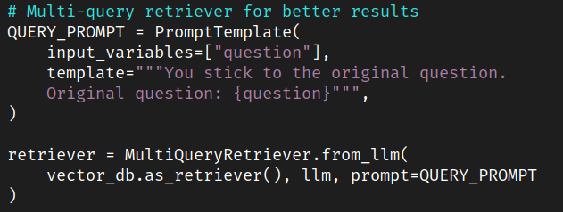
We make sure the LLM doesn’t go out of the context, in our case here it is the current odt document in the collection in the Vector db.
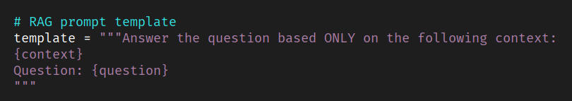
Based on the context and rules built above we ask the question to the LLM to get what we want
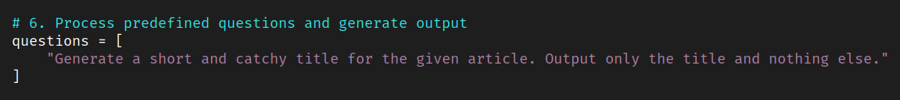
Finally, the response provided by the LLM, we output it to a text file which will have the same filename as the odt file. This is for the script which is building the HTML file to be able to reconciliate both the odt file with the article and the txt file with the the title.
As explain in last month article we then copy back the output files to insert the titles for each article.
Ssh authentication with key
This is quite easy to do and very usefull when you need to remote through ssh regularly certain machine or like for my current workflow you need to ssh some machines and would like to authenticate without password.
First if you don’t have one you need to create an ssh key on your client machine.
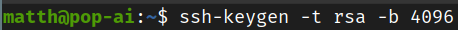
You will be ask where you want to save the key and add a passphrase if you want to it is recommended to do so but can be problematic for certain workflow.
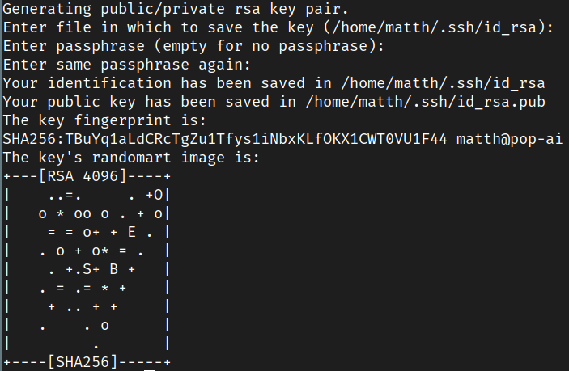Ps: this key has been delete
You can then copy the public key to the target server
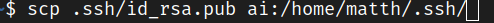
I have also configured in my ssh config file the IP of the target server and the user name to authenticate.
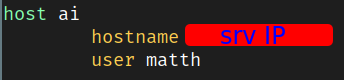
Hope your enjoying this, and will see you next month !
With kind regards
Matthieu
Github repo: https://github.com/Vagrantin/blog